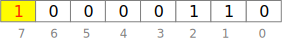

Negative Binary Numbers
Contents
Negative Binary Numbers#
In the prior section on binary representation and manipulation we discussed only positive integers and zero. Negative numbers complicate things slightly.
Representing a negative integer#
How should we represent -1 in binary? How about -42?
Sign and magnitude: Seemed like a good idea at the time#
A simple approach would be to reserve one binary
digit as a sign bit. For example, in an 8-bit integer,
10000001 could represent -1, and 10000101 could represent -5.
That is called sign and magnitude representation. It is
simple, but it has some problems.
In sign and magnitude representation we end up with 00000000 for positive zero and 10000000 for negative zero. But … really, negative zero? This is a pretty clear indication that sign and magnitude representation is going to have other problems. And it does.
From the perspective of a computer designer, sign and magnitude representation adds a lot of complication to the circuitry needed for arithmetic. Consider that somehow when we add $\(00000001_2\)\( (1) and \)\(10000001_2\)\( (-1) we should get \)\(00000000_2\)$ (0). The circuitry that adds positive integers is not going to do that, so special purpose circuitry for arithmetic on negative numbers would be required. Chip designers hate that.
A representation that chip designers can be happy with should add as little complication as possible to CPU circuitry. Adding a negative number to a positive number, or a negative number to a negative number, should work exactly the same as adding two positive numbers. Which brings us to two’s complement notation.
Two’s complement: A better way#
The representation for negative numbers actually used in virtually all modern digital computers is two’s complement. In this notation, the 8-bit representation of -1 is 11111111 and the 8-bit representation of 1 is, of course, 00000001. If we add them, we “carry the one” all the way into the 9th (non-existant) digit, where it is lost, and we get 00000000. Addition and subtraction can work in the ordinary way, with no special cases for negative numbers.
The essence of two’s complement representation is that, while the value of digit $\(p\)\( is normally \)\(2^p\)\(, the value of the very leftmost digit is \)\(-2^p\)$.
In an 8-bit signed integer, bit 7 represents $\(-(2^7)\)\(, or -128. The signed 8-bit number 10000110, therefore, is \)\(-(2^7) + 2^2 + 2^1\)$ = -128 + 4 + 2 = -122.

We said above that an 8-bit representation of -1 would be 11111111. We can see that this is because the leftmost bit (still called the sign bit) represents -128, and the remaining bits represent 127, so that together they represent -1.
Check your understanding#
If 11111111 is -1, what is the representation of -2?
What range of values can be represented by by an 8-bit integer using the two’s complement notation?
Python ‘bin’ lies about negative numbers#
If you count on the Python bin function to check
the binary representation of integers, you will
encounter a problem: Python’s bin function uses
sign and magnitude notation, not two’s complement,
to represent a negative integer as a string of
0 and 1 characters. In this way the Python
bin function can always produce a string that starts
with the character 1, except for the binary value 0.
It does not need to show the leading zeros on a positive
integer, and it does not need to show a long string of 1
characters for a small negative integer.
>>> bin(-1)
'-0b1'
>>> bin(-2)
'-0b10'
This is usually convenient, especially considering the real internal representation of negative one in Python is likely to start with at least 31 1 bits. It can be misleading, however, when you are trying to reason carefully about the actual representation of negative numbers.
Sign extension#
Note that when we describe the representation of a negative binary number, we need to say how many bits are in the representation. The representation of -1 as an 8-bit signed integer is 11111111, but the representation of -1 as a 16-bit signed integer is 1111111111111111. I do not want to type the representation of -1 as a 32-bit signed integer, or as a 64-bit signed integer, but you can probably guess what it looks like.
Suppose we have 3-bit signed integers. Then 101 represents $\(-2^2 + 2^0\)$ = -4 + 1 = -3. Suppose I want to store this same value in a 5-bit signed integer. The new value will become 11101, that is, -16 + 8 + 4 + 1 = -3.
You can likely see the pattern: If we want to store a signed n-bit value in a larger m-bit field, we must pad with 1 digits on the left. More generally, what we pad with is the sign bit. Thus the 3-bit negative number 101 is padded out to the 5-bit negative 11101, while the 3-bit positive number 011 is padded out to the 5-bit positive number 00011.
This is called sign extension.
If we go the other way, we simply chop off bits on the left, whether they are 0 or 1. If the bits we chop off are not all the same, and the same as the remaining sign bit, then the number does not fit in the smaller field!
Packing and extracting bit fields#
When we pack multiple values into an integer, we must be careful to determine whether that value should be interpreted as a signed integer in which the leftmost bit is the sign bit, representing a negative power of 2, or an unsigned integer in which all the bits represent positive powers of two.
Suppose we use four bits, bits 0..3, to represent an integer. We might treat that field as an unsigned integer that can range from 0 to 15, or we might treat it as a signed integer that can range from -8 to 7. If we treat it as an unsigned integer, the masking and shifting can work exactly as described in the the prior chapter, but we cannot represent negative values. If we treat it as a signed integer, then we must add a sign extension step when we extract it.
To pack a signed value into a field, we don’t need to do
anything special except be sure to mask the value to
chop off any extra 1 bits on the left. For example, if we
want to store a signed 3-bit value x in bits 3..5 of
w, assuming those bits of w are initially zero,
we would need to mask off any high bits, like this:
x_masked = x & 0b111
x_shifted = x_masked << 3
w = w | x_shifted
It is only on extraction that we must perform
sign extension. For example, if x in the
preceding line was -1, and w is an 8-bit
value 0, then w after the code
above will contain 00111000. We want to extract
the field in bits 3..5, holding value 111,
interpret it again as -1. To do that, we must
extend the sign bit (the initial 1) however
far it takes to fill the word into which we are
extracting that field.
Implementing sign extension in Python is slightly odd. You must understand why and when to perform sign extension, but I will provide a sign extension function that you can call.
Summary#
In all modern digital computers, negative integers are represented with the two’s complement system. In this system, the sign bit represents a negative power of two, and all other bits represent positive powers of two.
Two’s complement notation is very convenient and efficient for chip designers, because arithmetic with negative and positive numbers work exactly the same, with no extra circuitry.
When we pack multiple small integers into an integer value, we must be careful about whether we intend a field to represent a signed value or an unsigned value. If the field represents an unsigned value, then each bit $\(p\)\( represents \)\(2^p\)\(. An unsigned value with \)\(k\)\( bits ranges from \)\(0\)\( to \)\(2^k-1\)\(. If the field represents a signed value, then the _sign bit_ represents \)\(-2^p\)\( and all other bits \)\(p\)\( represent \)\(2^p\)$.
When we pack a signed value into a smaller field, we mask off any extra 1 bits on the left. When we extract a signed value into a larger memory word, we must sign extend it, filling all bits to the left of the sign bit of the smaller field with duplicates of the sign bit.
When we use the Python bin function, we get a string
representation based on sign and magnitude notation,
and not an accurate representation of the actual
internal two’s-complement representation.